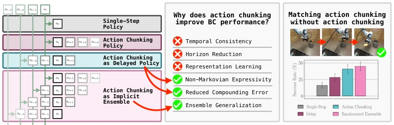
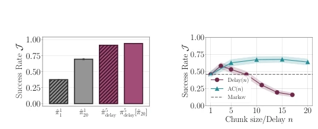
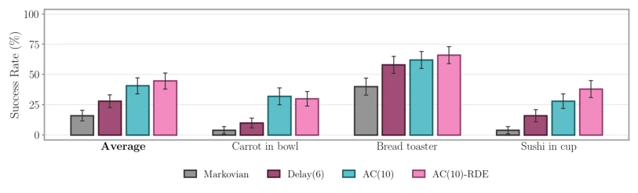
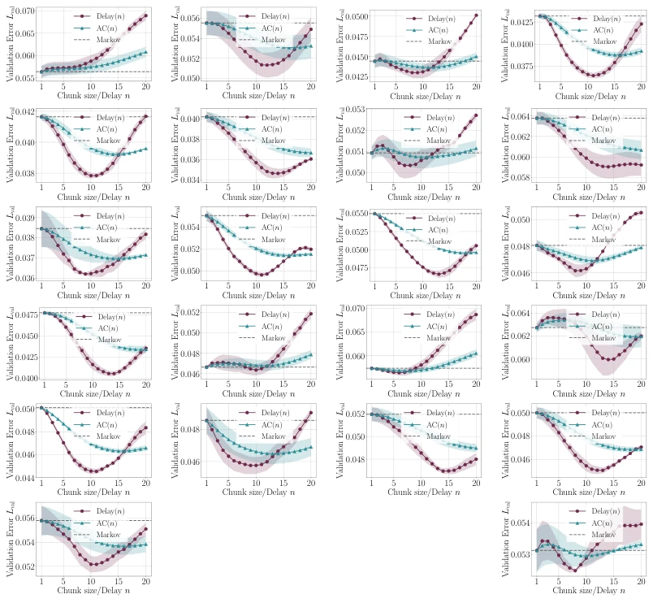
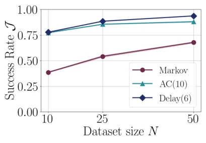
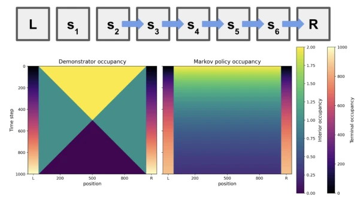
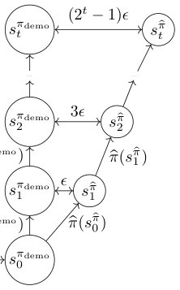
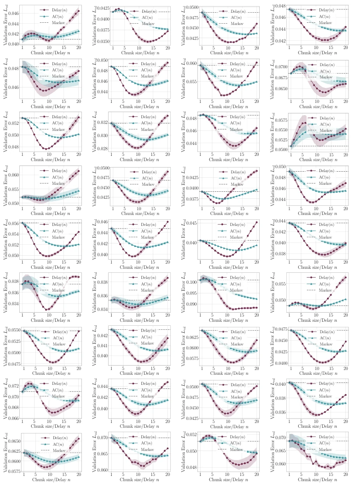
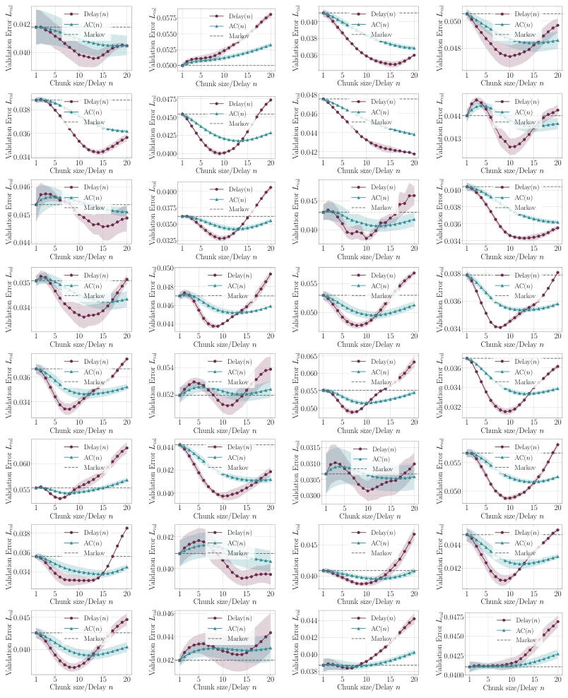
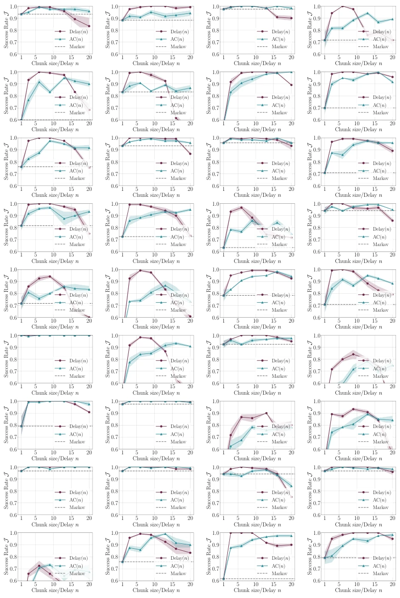

This paper acts like a calm forensic pathologist, dissecting the most popular "Action Chunking" technology in the field of robot control. The authors do not blindly hype like certain papers, but directly point out that the commonly believed "Temporal Consistency" and "Horizon Reduction" are mere fallacies; the true contributors are "Implicit Ensembling" and "Non-Markovian Representation". Most ironically, they found that as long as the chunking strategy is decomposed into an ensemble strategy with random delays, it can achieve or even exceed the chunking effect without chunking. This is like discovering that everyone is desperately buying "all-in-one phones", only to find that just changing to a "multi-camera random shooting" shell yields equally good, even more stable results. Of course, this solution of "complicating simple problems" (Explicit Ensembling) although performance improves, computational cost also goes up, counting as a classic operation of trading compute for performance.
In robot behavioral cloning (Behavioral Cloning, BC), action chunking (Action Chunking) has become mainstream; almost all SOTA policies (such as ACT [1], Diffusion Policy [2]) rely on it. However, the academic community's understanding of its success reasons remains superficial: universally believed to be due to "Temporal Consistency" [1, 2, 6], "Horizon Reduction" [1], or "Representation Learning" [2, 7]. The authors of this paper keenly point out that these hypotheses lack empirical support and cannot explain why chunking strategies perform excellently in certain scenarios. For example, Simchowitz et al. [50] and Zhang et al. [51] explored the impact of chunking on error accumulation from a control theory perspective, but failed to cover the complex dynamics in actual training. This paper aims to fill this cognitive gap, verify the failure of these hypotheses through rigorous experiments, and reveal the neglected "Implicit Ensembling" mechanism, thereby providing a theoretical basis for designing more efficient policies.

Figure 1: In this work we investigate why action chunking improves the performance of behavioral cloning in robotic control. We show that common hypothesis—temporal consistency, horizon re- duction, and representation learning—are not able to explain the performance of action chunking. Instead, we demonstrate that a combination of three factors—expressing non-Markovian delays in human behavior, reducing compounding error by predicting actions based on past observations, and ensemble-like effects induced by learning a variety of temporal relationships—almost fully explains the success of action chunking. Motivated by our insights, we show that in both simulated and real- world robotic control, we can match the performance of action chunking without explicitly utilizing action chunking.
This paper proposes a systematic analysis framework, the core of which lies in deconstructing the action chunking strategy into three key mechanisms: Non-Markovian Representation, Error Accumulation Reduction, and Implicit Ensembling. First, by training and deploying "Delayed Policy" (π^d_delay), i.e., predicting current actions based on observations k steps ago, to verify the role of non-Markovianity and horizon reduction. Experiments show that in Libero tasks, the delayed strategy is sufficient to reproduce the performance of the chunking strategy, proving that chunking is not necessary. Second, for complex tasks like Robomimic, the authors propose the concept of "Implicit Ensembling": chunking strategies actually learn multiple temporal relationships simultaneously (a_t|o_t, a_t|o_{t-1}, ..., a_t|o_{t-k+1}), equivalent to an implicit ensemble model. To verify this, the authors designed "Randomized Delay Ensemble (RDE)": during inference, randomly select predictions with different delays from the chunking strategy for execution. In addition, to further amplify this advantage, the authors also proposed an Explicit Ensembling strategy, i.e., training multiple independent delayed strategies and ensembling them, thereby exceeding standard chunking strategies both theoretically and experimentally. The entire process from theoretical derivation (such as Theorem 1 and 2) to experimental verification is logically rigorous.
Experiments are conducted on Libero-90, Robomimic (Can, Square, Transport, Tool Hang), and real-world robot tasks. Baselines include single-step Markov policy, standard action chunking policy (AC(k)), and delayed policy (Delay(d)). Evaluation metrics are mainly task success rate (Success Rate) and validation set action prediction error (MSE). Main findings: 1. In Libero, delayed strategy performance is comparable to chunking strategy, overturning the necessity assumptions of temporal consistency and horizon reduction (Figure 2, 3). 2. In Robomimic, delayed strategy performance is not as good as chunking strategy, but after introducing "Implicit Ensembling" (via RDE or Explicit Ensembling), performance completely matches or even exceeds chunking strategy (Table 1, Figure 9). 3. Real-world experiments (Figure 3 caption) confirm the generalization of simulation conclusions. Ablation studies show that Explicit Ensembling strategy significantly outperforms standard chunking in multiple domains, proving that "Implicit Ensembling" is the key to improving performance.

Figure 7: Success of Marko- vian and delayed policies trained with and without ac- tion chunks, aggregated over Libero-90.

Figure 10: Comparison of success rates across the three real-world tasks considered. While action chunking significantly outperforms Markovian policies, delayed policies capture much of the performance of action chunking, and randomized delays (RDE) fully captures the performance of action chunking.

Figure 20: Validation loss for each Libero task from 68 to 89 (corresponding to Fig. 2), part 3.
其他图片Other Figures

Figure 12: Comparison of Markovian, action chunking and delayed policies for increasing dataset sizes.

Figure 16: Illustrative example of random-walk behavior on a 1D line-world with n “ 1000 states. While the (non-Markovian) demonstrator moves constantly left or constantly right and arrives at either the left or right terminating states with 100% probability before the chosen horizon, marginal- izing this into a Markovian policy (i.e. via BC) results in significantly different state occupancy and in the limit of large N only achieves 1 ´ e´2 success rate at time T “ N.

Figure 17: Construction for lower bound on performance of Markovian policy (Theorem 1)

Figure 18: Validation loss for each Libero task from 0 to 35 (corresponding to Fig. 2), part 1.

Figure 19: Validation loss for each Libero task from 36 to 67 (corresponding to Fig. 2), part 2.

Figure 21: Success rate for each Libero task from 0 to 35 (corresponding to Fig. 3), part 1.